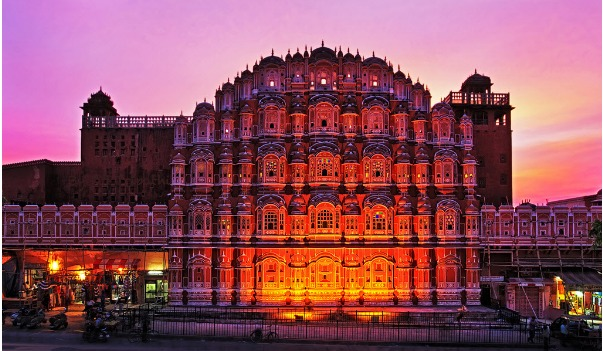
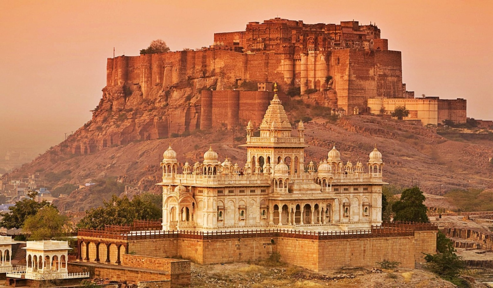

Jaipur is famous for its royal palaces, historic forts, and vibrant markets. Major attractions include Amber Fort, City Palace, Hawa Mahal, and Jantar Mantar. Jaipur beautifully blends royal heritage with modern culture, making it a top tourist destination.

Jodhpur is famously known as the Blue City because of its blue-painted houses near Mehrangarh Fort. It reflects the rich culture and traditions of Rajasthan. The city’s main attractions are Mehrangarh Fort, Jaswant Thada, Umaid Bhawan Palace, and local bazaars. Jodhpur offers a true royal desert experience.

Udaipur is called the City of Lakes. Surrounded by the Aravalli Hills, it is known for its peaceful lakes, palaces, and scenic beauty. Popular places include Lake Pichola, City Palace, Jag Mandir, and Fateh Sagar Lake.